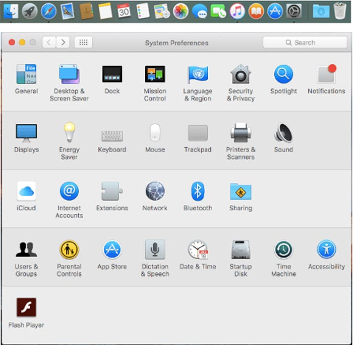
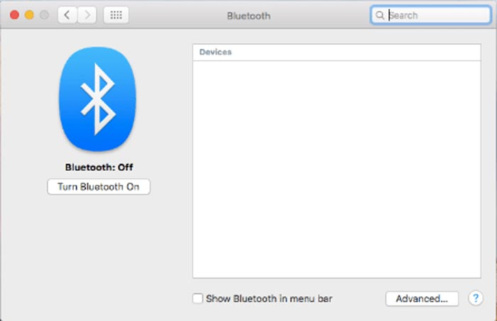
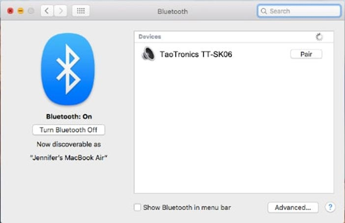
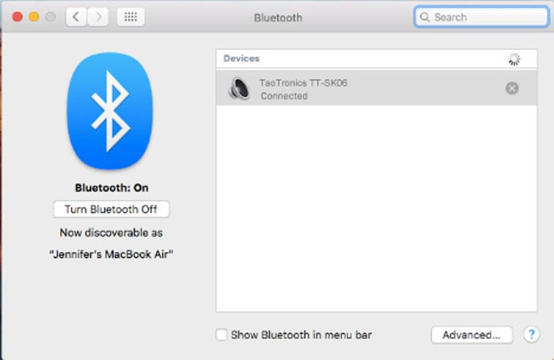

Pair & Connect Your TaoTronics Speaker with Your Mac
Step 1: On your Mac, click on "System Preferences" (located in the toolbar on the bottom right of your screen). The "System Preferences" window will then appear.

Step 2: Click on "Bluetooth" in the "System Preferences" window. This will take you to your Mac's Bluetooth settings. Please make sure that Bluetooth is turned on. If not, click "Turn Bluetooth On" on the far left of the window.

Step 3: Now, turn on your TaoTronics Speaker. Take TaoTronics TT-SK06 as an example. The Bluetooth LED Light will flash blue quickly to indicate that the speaker is in pairing mode. If solid blue. your speaker is already paired to a source device; you will need to press and hold the multi-functionalbutton (or Bluetooth Button) on your TaoTronics Speaker for 1seconds until your speaker is in pairing mode, ready to pair and connect. You will then see a listing of your speaker under "Devices" in the "Bluetooth" window.

Step 4: Then, click "Pair" on the listing of your TaoTronics Speaker to begin the pairing process. Please wait and stay patient while your Mac connects to your TaoTronics Speaker.

Step 5: The listing of your TaoTronics Speaker will then show that it is "Connected". You have now successfully paired and connected your speaker to your Mac. Your TaoTronics Speaker will now be able to play audio via Bluetooth from your Mac.